4. ble_app_blinky 介绍
4.1. 简介
此ble_app_blinky是nordic nrf5x系列芯片的蓝牙从设备（Slave）应用程序。基于Nordic nRF5_SDK_16 的软件包移植而成。
支持RT-Thread实时嵌入式系统。作为RT-Thread软件包nrf5x_sdk的例程，可通过RT-Thread 开发辅助工具Env直接配置到RT-Thread系统工程中。
nrf5x_sdk软件包网址：https://github.com/supperthomas/nrf5x_sdk
4.2. 功能
ble_app_blinky应用程序实现了通过蓝牙主设备（Master）控制从设备（Slave）的led灯闪烁，并且能监测按钮的按压、抬起状态。
功能集成到一个服务中，服务包括LED和Button两个特性。LED特性支持读、写，Button特性支持读、通知。
4.3. 软硬件平台
硬件平台是nordic的nrf5x系列开发板。
软件平台是nrf5x系列芯片的RT-Thread嵌入式系统工程，工程需要包含nrfx和nrf5x_sdk两个软件包，Nordic ble协议栈s140，片上外设配置包含UART和GPIO。
4.4. 试验
4.4.1. 试验板
以nrf52840开发板试验。如下图：
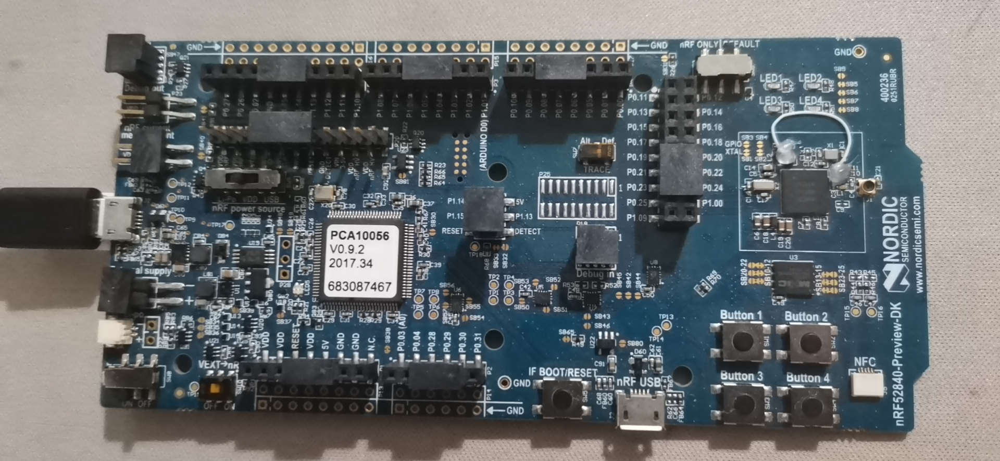
4.4.2. 程序配置设置
下载RT-Thread的nrf52840 BSP工程模板，下载地址是 https://github.com/RT-Thread/rt-thread
下载并安装RT-Thread 开发辅助工具Env。参考RTT安装介绍，下载地址 https://www.rt-thread.org/page/download.html
进入nrf52840工程文件夹
\rt-thread\bsp\nrf5x\nrf52840

打开env配置工具
在工程中右击选择ConEmu Here
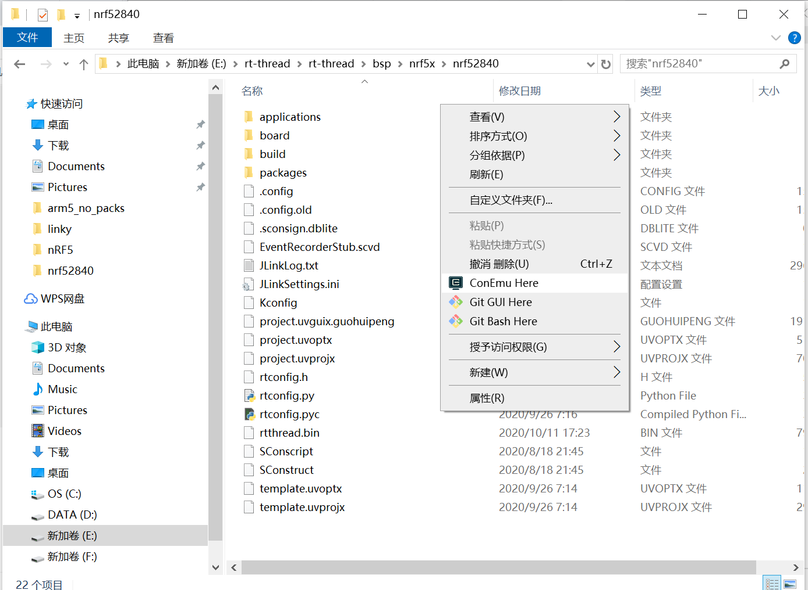
然后弹出如下界面
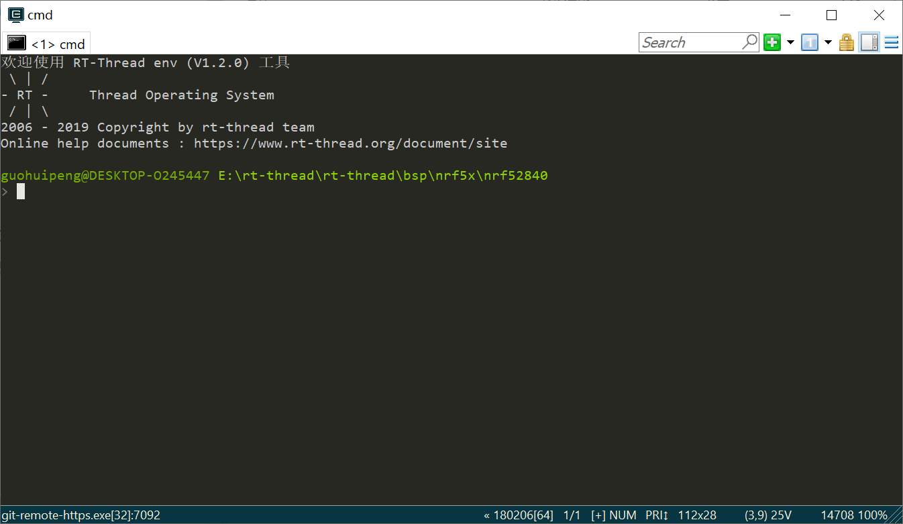
输入menuconfig弹出如下界面
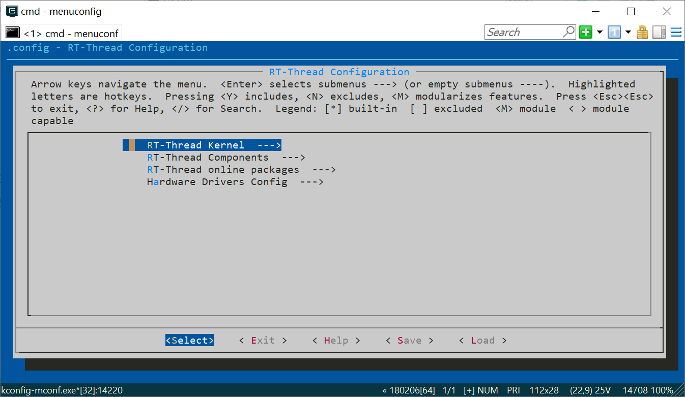
使用方向键选择配置UART和GPIO
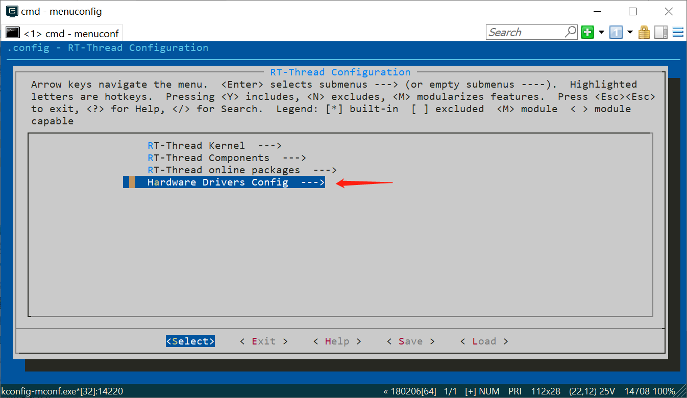
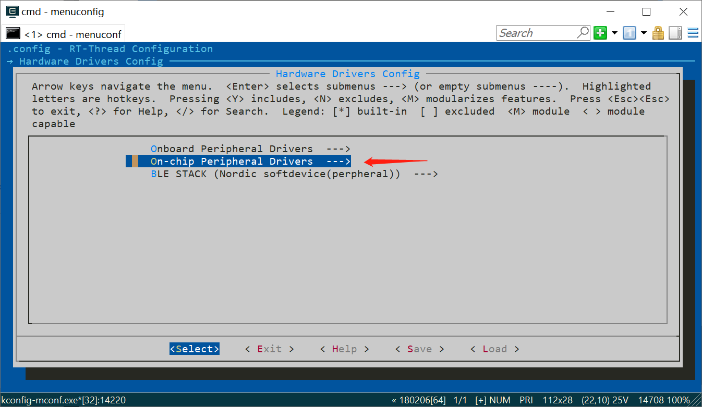

在Enable UART中可以选择UART0或者UART1，可以配置rx和tx的引脚编号。此开发板选择默认。
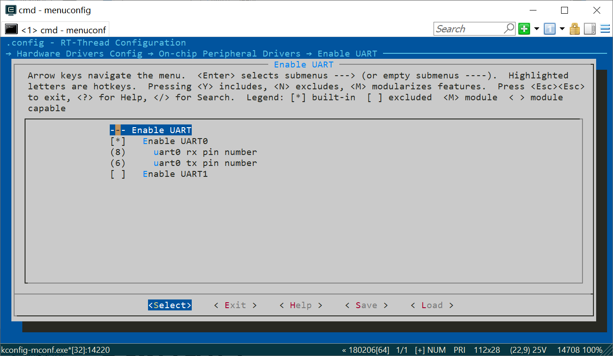
配置ble协议栈
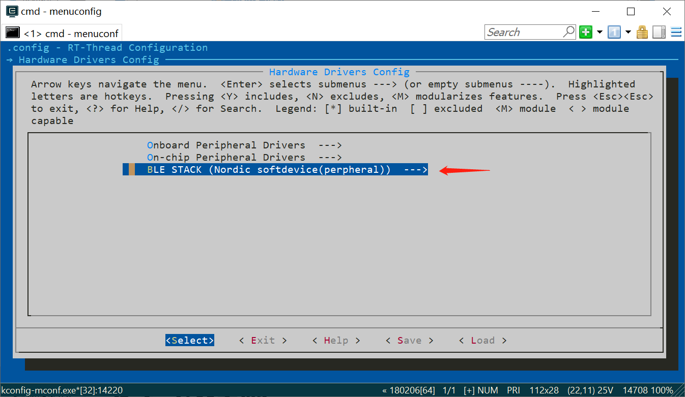
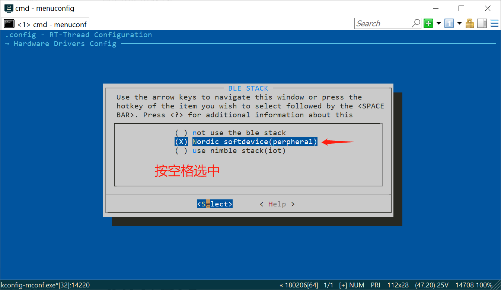
配置nrfx和nrf5x_sdk软件包


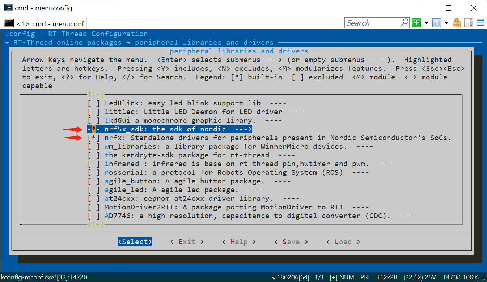
在nrf5x_sdk中选择ble_app_blinky应用例程

ble_app_blinky例程中可以配置应用使用的引脚编号（要与开发板对应），此开发板选择默认值。引脚编号是rtt驱动层drv_gpio.c对nrf5x芯片定义的引脚编号。从1-47依次对应gpio端口0的32个引脚和gpio端口1的16个引脚。
4.4.3. 配置编译
按Esc退到该界面

选择yes保存，出现如下界面

输入scons –target=mdk5回车编译工程，因为使用mdk5开发环境，也可以根据具体环境选择mdk4或者iar等。
编译需要一段时间，完成后退出env工具。
4.4.4. 编译下载程序
打开项目中的工程文件

编译工程

连接开发板，选择softdevice，下载程序

选择rtthread，下载程序

打开串口调试助手，首次启动运行出现如下信息
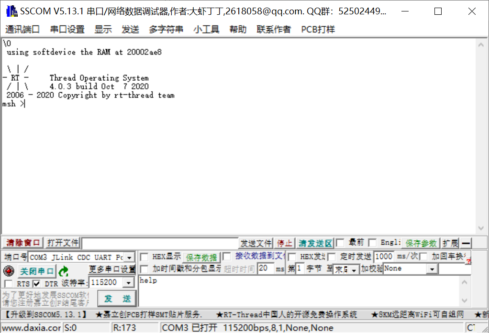
输入help，按压回车，出现如下信息

输入ble_app_blinky，启动ble_app_blinky应用例程。开发板的广播指示灯亮。
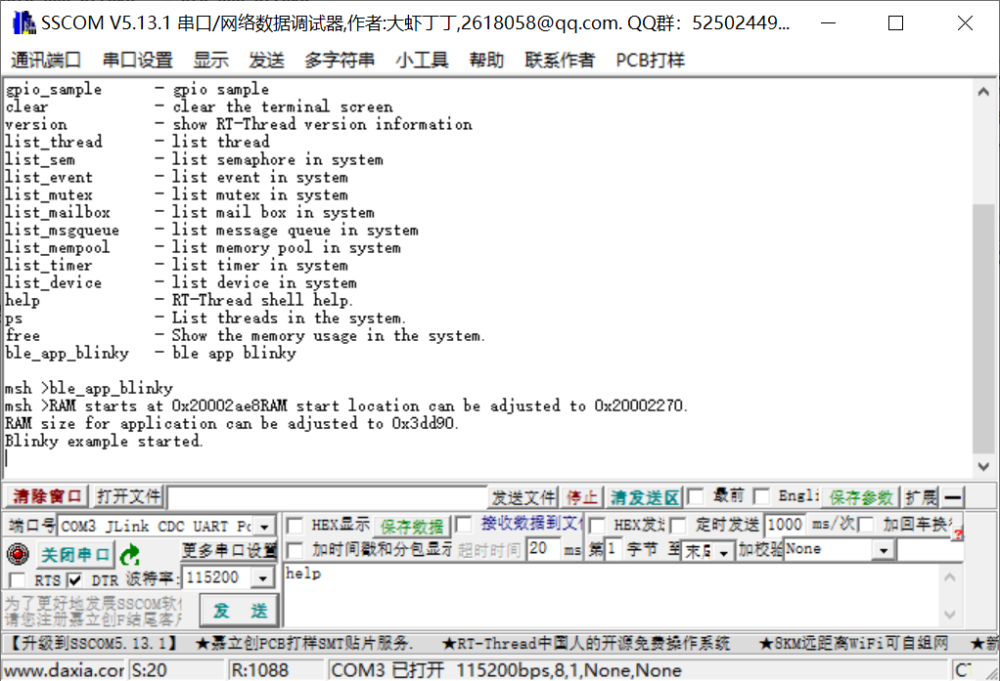
4.4.5. 手机连接验证
手机端下载nRF Connect工具。下载地址是
https://www.nordicsemi.com/Software-and-tools/Development-Tools/nRF-Connect-for-mobile

打开手机蓝牙功能，打开该app，搜索到Nordic_Blinky。

点击CONNECT，连接并打开按钮和LED服务

按照下面操作，可蓝牙无线控制开发板。
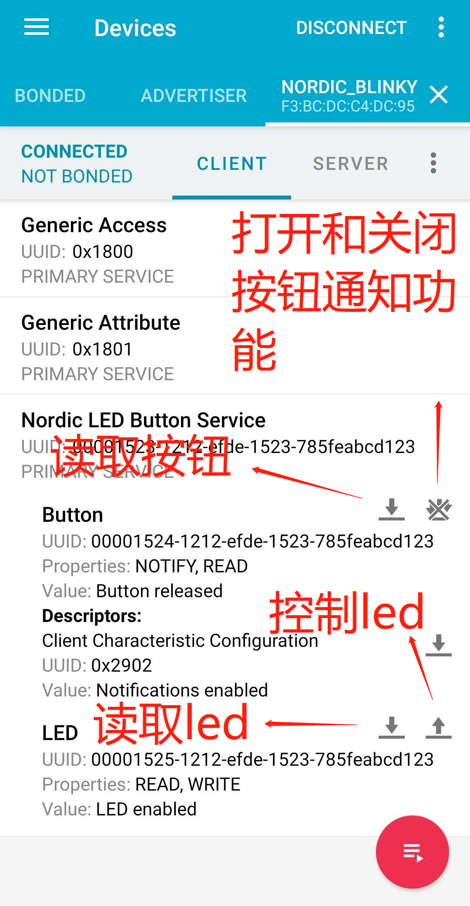
4.5. 软件结构
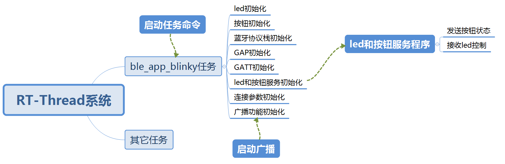
4.6. 程序
程序调用接口主要有：
协议栈softdevice s140的通用接口函数，在nrf5x_sdk包softdevice的文件夹下。
rt-thread与nrf5x_sdk适配接口函数，在nrf5x_sdk包rtt_adapter文件夹下。
nrf5x_sdk包含的ble服务组件层针对led和按钮的接口函数，在ble_lbs.c和ble_lbs.h里面。ble_lbs.c和ble_lbs.h是在协议栈softdevice s140的API接口之上封装的模块工具，可用于为包含有led和按钮服务的app提供添加服务，添加特性，注册事件句柄。
rt-thread的pin组件接口函数，配置nrf5x芯片的gpio口。
4.6.1. 创建ble_app_blinky任务
int ble_app_blinky(void)
{
static rt_thread_t tid1 = RT_NULL;
tid1 = rt_thread_create("softdevice",
ble_app_softdevice, RT_NULL,
4096,
22, 5);
if (tid1 != RT_NULL)
rt_thread_startup(tid1);
return RT_EOK;
}
4.6.2. 任务里的初始化工作
static int ble_app_softdevice(void)
{
leds_init(); //led初始化
buttons_init(); //按钮初始化
ble_stack_init(); //蓝牙协议栈初始化
gap_params_init(); //通用访问协议初始化
gatt_init(); //通用属性规范初始化
services_init(); //服务初始化
advertising_init(); //广播初始化
conn_params_init(); //连接参数初始化
rt_kprintf("Blinky example started.\r\n");
advertising_start(); //开启广播
}
4.6.3. led和按钮初始化
static void leds_init(void)
{
rt_pin_mode(ADVERTISING_LED, PIN_MODE_OUTPUT);
rt_pin_mode(CONNECTED_LED, PIN_MODE_OUTPUT);
rt_pin_mode(LEDBUTTON_LED, PIN_MODE_OUTPUT);
/*led off*/
rt_pin_write(ADVERTISING_LED, PIN_HIGH);
rt_pin_write(CONNECTED_LED, PIN_HIGH);
rt_pin_write(LEDBUTTON_LED, PIN_HIGH);
}
static void buttons_init(void)
{
rt_err_t err_code;
/*illustrate last parameter.
true: hi_accuracy(IN_EVENT),
false: lo_accuracy(PORT_EVENT)
*/
err_code = rt_pin_attach_irq(LEDBUTTON_BUTTON, PIN_IRQ_MODE_RISING_FALLING,
button_event_handler, //按钮状态处理的回调函数
(void*)false);
}
其中接口函数是rt-thread的pin组件层gpio操作接口函数。
按钮引脚配置为端口触发事件，注册了中断回调函数button_event_handler。
4.6.4. 协议栈初始化
static void ble_stack_init(void)
{
ret_code_t err_code;
uint32_t ram_start = 0;
err_code = nrf_sdh_enable_request();//向所有监视器请求启用ble协议栈
APP_ERROR_CHECK(err_code);
// Configure the BLE stack using the default settings.
// Fetch the start address of the application RAM.
err_code = nrf_sdh_ble_default_cfg_set(APP_BLE_CONN_CFG_TAG, &ram_start);//用默认参数配置ble协议栈
APP_ERROR_CHECK(err_code);
// Enable BLE stack.
err_code = nrf_sdh_ble_enable(&ram_start);//使能ble协议栈
APP_ERROR_CHECK(err_code);
// Register a handler for BLE events.
NRF_SDH_BLE_OBSERVER(m_ble_observer, APP_BLE_OBSERVER_PRIO, ble_evt_handler, NULL);//注册ble连接相关状态处理事件的句柄
}
协议栈在使用前必须征得所有监视器确认，然后使用默认参数配置协议栈并启动协议栈。最后注册一个监视连接状态的处理句柄。
4.6.5. 通用访问协议参数初始化
static void gap_params_init(void)
{
ret_code_t err_code;
ble_gap_conn_params_t gap_conn_params;
ble_gap_conn_sec_mode_t sec_mode;
BLE_GAP_CONN_SEC_MODE_SET_OPEN(&sec_mode);//设置该设备为开发连接
err_code = sd_ble_gap_device_name_set(&sec_mode,
(constuint8_t*)DEVICE_NAME,
strlen(DEVICE_NAME));
//设置gap设备名，即蓝牙搜索名
APP_ERROR_CHECK(err_code);
memset(&gap_conn_params, 0, sizeof(gap_conn_params));
gap_conn_params.min_conn_interval = MIN_CONN_INTERVAL;
gap_conn_params.max_conn_interval = MAX_CONN_INTERVAL;
gap_conn_params.slave_latency = SLAVE_LATENCY;
gap_conn_params.conn_sup_timeout = CONN_SUP_TIMEOUT;
err_code = sd_ble_gap_ppcp_set(&gap_conn_params);//设置gap的连接参数
APP_ERROR_CHECK(err_code);
}
设置内容包括，安全属性为开放连接，设备搜索名称，最大最小连接间隔，延时的连接事件数（即累计多少个连接事件后再处理），未连接溢出时间（即超出该时间未进行一次连接就溢出）。
4.6.6. 通用属性规范初始化
static void gatt_init(void)
{
ret_code_t err_code = nrf_ble_gatt_init(&m_gatt, NULL);
APP_ERROR_CHECK(err_code);
}
再nrf_ble_gatt_init中初始化内容主要是中心设备和外围设备的GATT层一包最大传输字节数，GAP层一包最大传输字节数。
4.6.7. led和按钮的服务初始化
static void services_init(void)
{
ret_code_t err_code;
ble_lbs_init_t init = {0};
nrf_ble_qwr_init_t qwr_init = {0};
// Initialize Queued Write Module.
qwr_init.error_handler = nrf_qwr_error_handler;
err_code = nrf_ble_qwr_init(&m_qwr, &qwr_init);//写队列初始化
APP_ERROR_CHECK(err_code);
// Initialize LBS.
init.led_write_handler = led_write_handler;//led切换操作句柄
err_code = ble_lbs_init(&m_lbs, &init);
APP_ERROR_CHECK(err_code);
}
uint32_t ble_lbs_init(ble_lbs_t * p_lbs, const ble_lbs_init_t * p_lbs_init)
{
uint32_t err_code;
ble_uuid_t ble_uuid;
ble_add_char_params_t add_char_params;
// Initialize service structure.
p_lbs->led_write_handler = p_lbs_init->led_write_handler;
// Add service.
ble_uuid128_t base_uuid = {LBS_UUID_BASE};
err_code = sd_ble_uuid_vs_add(&base_uuid, &p_lbs->uuid_type);
VERIFY_SUCCESS(err_code);
ble_uuid.type = p_lbs->uuid_type;
ble_uuid.uuid = LBS_UUID_SERVICE;
err_code = sd_ble_gatts_service_add(BLE_GATTS_SRVC_TYPE_PRIMARY, &ble_uuid, &p_lbs->service_handle);
VERIFY_SUCCESS(err_code);
// Add Button characteristic.
memset(&add_char_params, 0, sizeof(add_char_params));
add_char_params.uuid = LBS_UUID_BUTTON_CHAR;
add_char_params.uuid_type = p_lbs->uuid_type;
add_char_params.init_len = sizeof(uint8_t);
add_char_params.max_len = sizeof(uint8_t);
add_char_params.char_props.read = 1;
add_char_params.char_props.notify = 1;
add_char_params.read_access = SEC_OPEN;
add_char_params.cccd_write_access = SEC_OPEN;
err_code = characteristic_add(p_lbs->service_handle,
&add_char_params,
&p_lbs->button_char_handles);
if (err_code != NRF_SUCCESS)
{
return err_code;
}
// Add LED characteristic.
memset(&add_char_params, 0, sizeof(add_char_params));
add_char_params.uuid = LBS_UUID_LED_CHAR;
add_char_params.uuid_type = p_lbs->uuid_type;
add_char_params.init_len = sizeof(uint8_t);
add_char_params.max_len = sizeof(uint8_t);
add_char_params.char_props.read = 1;
add_char_params.char_props.write = 1;
add_char_params.read_access = SEC_OPEN;
add_char_params.write_access = SEC_OPEN;
return characteristic_add(p_lbs->service_handle, &add_char_params, &p_lbs->led_char_handles);
}
ble_lbs_init为添加led和按钮的服务，设置服务UUID，把led和按钮服务添加到服务属性表。服务里添加led特性和按钮特性。设置特性的读，写，通知等参数内容。
4.6.8. 广播初始化
static void advertising_init(void)
{
ret_code_t err_code;
ble_advdata_t advdata;
ble_advdata_t srdata;
ble_uuid_t adv_uuids[] = {{LBS_UUID_SERVICE, m_lbs.uuid_type}};
// Build and set advertising data.
memset(&advdata, 0, sizeof(advdata));
advdata.name_type = BLE_ADVDATA_FULL_NAME;
advdata.include_appearance = true;
advdata.flags = BLE_GAP_ADV_FLAGS_LE_ONLY_GENERAL_DISC_MODE;
memset(&srdata, 0, sizeof(srdata));
srdata.uuids_complete.uuid_cnt = sizeof(adv_uuids) / sizeof(adv_uuids[0]);
srdata.uuids_complete.p_uuids = adv_uuids;
err_code = ble_advdata_encode(&advdata, m_adv_data.adv_data.p_data, &m_adv_data.adv_data.len);
APP_ERROR_CHECK(err_code);
err_code = ble_advdata_encode(&srdata, m_adv_data.scan_rsp_data.p_data, &m_adv_data.scan_rsp_data.len);
APP_ERROR_CHECK(err_code);
ble_gap_adv_params_t adv_params;
// Set advertising parameters.
memset(&adv_params, 0, sizeof(adv_params));
adv_params.primary_phy = BLE_GAP_PHY_1MBPS;//1 Mbps PHY主信道
adv_params.duration = APP_ADV_DURATION;//广播溢出时间为无线大
adv_params.properties.type = BLE_GAP_ADV_TYPE_CONNECTABLE_SCANNABLE_UNDIRECTED;//无处理的可连接和可扫描
adv_params.p_peer_addr = NULL;
adv_params.filter_policy = BLE_GAP_ADV_FP_ANY;//允许任意设备扫描和连接
adv_params.interval = APP_ADV_INTERVAL;//广播时间间隔
err_code = sd_ble_gap_adv_set_configure(&m_adv_handle, &m_adv_data, &adv_params);
APP_ERROR_CHECK(err_code);
}
4.6.9. 连接参数初始化
static void conn_params_init(void)
{
ret_code_t err_code;
ble_conn_params_init_t cp_init;
memset(&cp_init, 0, sizeof(cp_init));
cp_init.p_conn_params = NULL;
cp_init.first_conn_params_update_delay = 20000;//FIRST_CONN_PARAMS_UPDATE_DELAY;//第一次更新连接参数的延时时间
cp_init.next_conn_params_update_delay = 5000;//NEXT_CONN_PARAMS_UPDATE_DELAY;//除第一次外的更新连接参数的延时时间
cp_init.max_conn_params_update_count = MAX_CONN_PARAMS_UPDATE_COUNT;//放弃连接前的尝试连接次数
cp_init.start_on_notify_cccd_handle = BLE_GATT_HANDLE_INVALID;//在启动连接时候开启cccd
cp_init.disconnect_on_fail = false;//更新连接参数失败后不断开连接
cp_init.evt_handler = on_conn_params_evt;//接收连接参数的句柄
cp_init.error_handler = conn_params_error_handler;
err_code = ble_conn_params_init(&cp_init);
APP_ERROR_CHECK(err_code);
}
4.6.10. 开启广播
static void advertising_start(void)
{
ret_code_t err_code;
err_code = sd_ble_gap_adv_start(m_adv_handle, APP_BLE_CONN_CFG_TAG);
APP_ERROR_CHECK(err_code);
//LED on
rt_pin_write(ADVERTISING_LED, PIN_LOW);//广播指示灯亮
}
4.6.11. led切换操作
static void led_write_handler(uint16_t conn_handle, ble_lbs_t * p_lbs, uint8_t led_state)
{
if (led_state)
{
rt_pin_write(LEDBUTTON_LED, PIN_LOW);
NRF_LOG_INFO("Received LED ON!");
}
else
{
rt_pin_write(LEDBUTTON_LED, PIN_HIGH);
NRF_LOG_INFO("Received LED OFF!");
}
}
在服务初始化的时候注册的操作句柄，接收到主设备的led控制后在此处切换led亮灭。
4.6.12. 按钮状态通知操作
static void button_event_handler(uint8_t pin_no, uint8_t button_action)
{
ret_code_t err_code;
uint8_t button_status;
button_status = rt_pin_read(LEDBUTTON_BUTTON);
NRF_LOG_INFO("Send button state change.");
err_code = ble_lbs_on_button_change(m_conn_handle, &m_lbs, button_status?0:1);
if (err_code != NRF_SUCCESS &&
err_code != BLE_ERROR_INVALID_CONN_HANDLE &&
err_code != NRF_ERROR_INVALID_STATE &&
err_code != BLE_ERROR_GATTS_SYS_ATTR_MISSING)
{
APP_ERROR_CHECK(err_code);
}
}
按钮状态变化时调用，其中读取了引脚的电平状态，利用接口函数ble_lbs_on_button_change通知主设备改变按钮特性值。注意，按钮pressed值应为1，released应为0，所以引脚的电平状态应该取反处理。